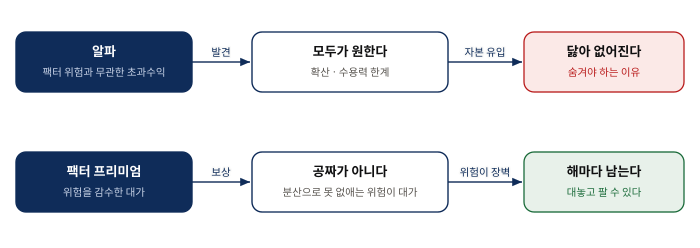
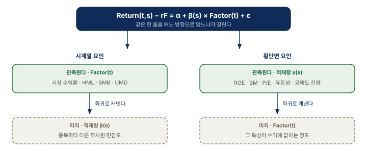
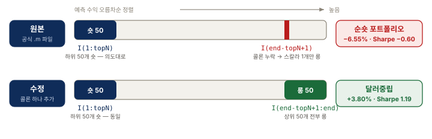
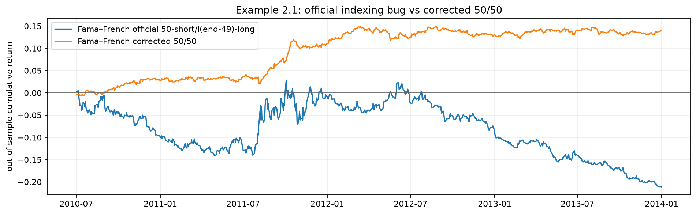
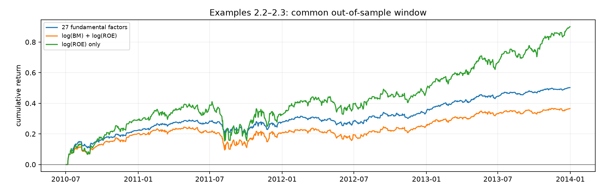
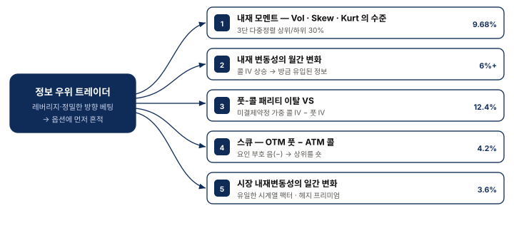
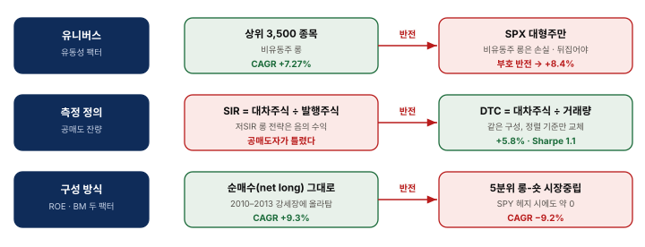
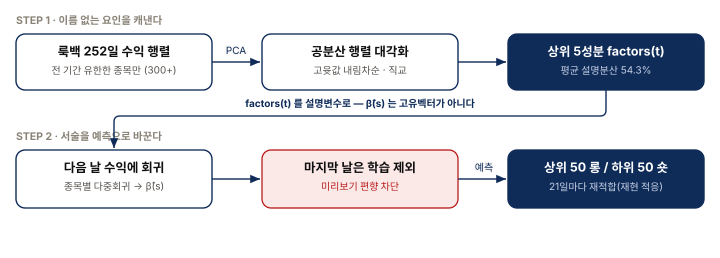
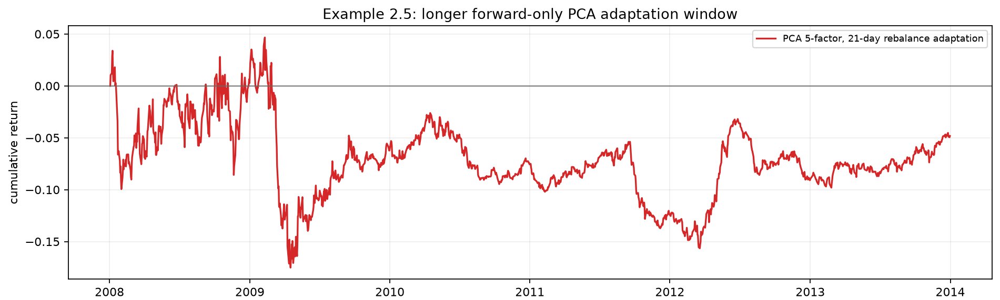
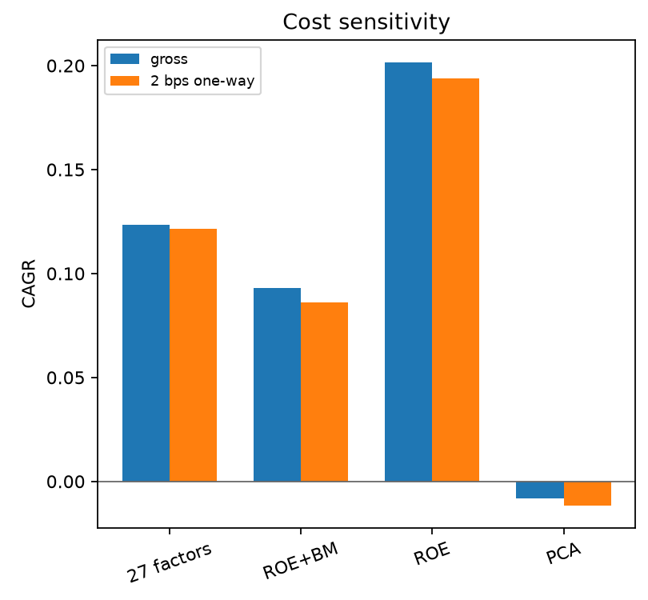

흔한 기대
좋은 팩터를 찾으면 된다
- 논문의 CAGR을 그대로 신뢰
- 표본 내 설명력을 예측력으로 착각
- 백테스트 수익 = 팩터의 실력
머신 트레이딩 · Chapter 2
예측력은 어디서 오고, 무엇 때문에 뒤집히는가
같은 요인이 유니버스가 바뀌면 0이 되고, 측정 정의가 바뀌면 결론이 반대가 되고, 코드 한 글자에 부호가 뒤집힌다.
흔한 기대
2장의 관점
오늘의 질문 — 이 수치를 믿으려면 무엇을 함께 확인해야 하는가?
개념에서 시작해 네 개의 예제를 지나, 마지막에 판단 기준으로 모은다.
알파는 닳고 팩터는 남는다 — 위험이 대가이기 때문에.
시계열과 횡단면은 관측·회귀의 방향이 거울상이다.
파마-프렌치 · 펀더멘털 · 옵션/공매도/유동성 · PCA.
순위 방법론과 비용, 그리고 8개 점검 항목.
발표의 약속 — 팩터 목록이 아니라 재사용할 검증 순서를 가져갑니다.
SECTION 01
위험이 대가이기 때문에 살아남는다
01알파는 분산으로 위험을 0까지 줄일 수 있어 모두가 원한다 — 그래서 닳는다. 팩터 위험은 분산해도 남는다 — 그래서 보상이 남는다.

질문의 전환 — "얼마나 버는가"가 아니라 "내가 무슨 위험을 사고 있는가".
이 장의 "팩터 모델"은 예측변수가 곧 팩터인 선형 모델로만 한정된다. 그 회귀계수가 스마트 베타다.
용어 경계
감쇠하는 팩터
기억할 점 — 팩터가 남는 이유가 위험이라면, 그 위험이 사라질 때 수익도 사라진다.
SECTION 02
같은 한 줄을 어느 방향으로 읽느냐
02시계열은 요인이 주어지고 적재량을 캔다. 횡단면은 적재량이 재무제표에 적혀 있고 요인을 캔다.

실무 영향 — 수식은 같아도 데이터 준비와 회귀 코드가 통째로 달라진다. 먼저 구분한다.
교과서의 대부분 팩터 모델은 서술적이다. 좌변만 한 칸 미래로 옮겨야 거래가 된다.
$$\mathrm{Return}(t,s)-r_F=\alpha(s)+\beta_1(s)\mathrm{Factor}_1(t)+\cdots+\varepsilon \quad (2.1)$$
$$\mathrm{Return}(t{+}1,s)-r_F=\alpha(s)+\beta_1(s)\mathrm{Factor}_1(t)+\cdots+\varepsilon \quad (2.2)$$
(2.1)의 쓸모
(2.1)만으로 거래하면
주의 — 동시대 $R^2$ 를 예측력의 근거로 쓰지 않는다.
SECTION 03
무엇을 재현했는지부터 확정한다
03I(1:topN), 롱은 I(end-topN+1) — 콜론이 빠졌다상위 50개가 아니라 위에서 50번째 종목 딱 하나를 롱한다. 책이 출력한 것은 50숏 1롱의 순숏 포트폴리오다.

출처: 공식 FamaFrenchFactors_predictive.m. Python 재현도 같은 순위를 선택하도록 구현해 버그를 그대로 재현했다.
핵심 — 이 일치는 전략이 옳다는 증거가 아니라 버그를 정확히 재현했다는 증거다.
그런데 표본 밖 결과의 부호가 갈린다 — 백테스트 결과가 아이디어가 아니라 구현에서 갈릴 수 있다.

| 구성 | 표본 밖 CAGR / Sharpe | 2bps 차감 후 |
|---|---|---|
| 원본 — 50숏 / 1롱 | −6.55% / −0.60 | −12.18% |
| 수정 — 50숏 / 50롱 | +3.80% / +1.19 | −2.78% |
그런데 — 고쳐서 양수가 되어도, 편도 2bps를 넣으면 다시 음수가 된다.
SECTION 04
그리고 그 수익의 정체
04정확한 수익 값을 맞힐 필요가 없다. 순서만 살짝 맞히면 수백 종목에 쌓인 미세한 우위가 누적된다.
표본 밖 CAGR 12.35% · Sharpe 1.68
훈련 CAGR 48% → 테스트 음수
개별 예측은 거의 잡음, 롱-숏 누적이 우위를 만든다
출처: 교재 예제 2.2. 27개는 분기 ARQ 5 + trailing ART 22로 모두 규모에 무관한 비율이다.
교훈 — 금융에서 약한 $R^2$ 은 쓸모없음이 아니다. 반대로 높은 $R^2$ 이 과적합의 신호일 수 있다.
세 모델 모두 허용오차 $10^{-5}$ 의 수치 재현. 그런데 곡선들이 같은 시점에 함께 꺾인다.

| 모델 | 보유 | 표본 밖 CAGR / Sharpe |
|---|---|---|
| 27개 펀더멘털 요인 | 63일 | 12.35% / 1.676 |
| $\log(\mathrm{BM})+\log(\mathrm{ROE})$ | 21일 | 9.32% / 1.011 |
| $\log(\mathrm{ROE})$ 단독 | 21일 | 20.17% / 1.305 |
단서 — 서로 다른 요인 집합인데 동시에 꺾인다면, 공통의 시장 성분을 공유한다는 뜻이다.
이 전략들의 포트폴리오는 대개 순매수(net long)다. 2010~2013년은 눈부신 강세장이었다.
ROE+BM · ROE 단독 (순매수)
한 팩터든 두 팩터든 대략 0
부호가 아예 뒤집힌다
원 논문(Chattopadhyay 2015)의 4.3%는 유니버스가 다르다 — 시총·유동성 상위 98퍼센타일 전체. 소형주(SML)에 ROE 단일 모델을 적용하면 5%를 넘는다.
판단 — "좋은 수익"을 만나면 팩터의 예측력인지 숨은 시장 베팅인지 먼저 가른다.
SECTION 05
그리고 부호가 뒤집히는 순간들
05레버리지가 크고 방향 베팅을 정교하게 표현할 수 있어서다. 다섯 팩터가 모두 이 하나의 논리를 다른 각도로 읽는다.

표시된 CAGR은 모두 원 논문이 자기 유니버스에서 보고한 값이며 이 회차의 재현값이 아니다.
그런데 예제 2.4 — 같은 내재 모멘트 전략을 SPX에만 적용하면 결과는 거의 정확히 0이다.
같은 개념을 다르게 재거나 다른 종목 집합에 적용하면 결론이 반대가 된다.

SIR = 대차주식÷발행주식 · DTC = 대차주식÷일평균거래량(20일 이동평균). DTC조차 2012년 이후 부호가 뒤집힌 것으로 보인다.
규칙 — 논문의 수치는 그 유니버스·그 정의에 딸린 값이다. 내 환경에서 다시 재기 전엔 믿지 않는다.
공식 ZIP에 MATLAB 소스는 다 있지만, 필요한 라이선스 데이터 패널이 없다.
| 주제 | 상태 | 막힌 지점 |
|---|---|---|
| 예제 2.2 · 2.3 | 수치 재현 | 허용오차 $10^{-5}$ 로 일치 |
| 예제 2.1 | 실행 + 근사 재현 | 버그·수정본 분리 실행 |
| 예제 2.5 PCA | 방법론적 적응 | 일간 → 21일 재적합 |
| 옵션 5개 팩터 | 수식 설명만 | OptionMetrics 변동성 표면 부재 |
| 공매도 잔량 · 유동성 | 개념 설명만 | Compustat · 거래량/발행주식 부재 |
확인한 것은 형식 점검뿐 — Vol 0.230 / Skew −0.120 / Kurt 0.040 의 일관성. 이는 수식 점검이지 백테스트가 아니다.
원칙 — 편리한 현대 데이터로 바꿔 놓고 "수치 재현"이라 부르지 않는다.
SECTION 06
요인도 적재량도 주어지지 않을 때
06공분산 행렬을 대각화해 직교하며 분산을 큰 순서로 설명하는 성분을 뽑는다. 그다음 다음 날 수익에 회귀한다.

핵심 장치 — 마지막 날을 학습에서 빼고 예측에만 쓴다. 미래 정보를 한 톨이라도 흘리면 백테스트 전체가 거짓이 된다.
책은 매 거래일 재적합해 15.6%를 보고한다. 이 회차는 21일마다만 재적합했다 — 같은 조건의 재현이 아니다.

| 항목 | 책 (일간 재적합) | 재현 적응 (21일) |
|---|---|---|
| CAGR / Sharpe | 15.56% / 1.379 | −0.82% / −0.024 |
| 재적합 · 설명분산 | 매 거래일 | 72회 · 상위 5성분 54.3% |
읽는 법 — "책이 틀렸다"가 아니라 다른 전략을 돌린 것. 이 차이만으로 부호가 갈린다는 사실 자체가 결과다.
SECTION 07
무엇을 확인해야 이 수치를 믿는가
07회귀계수는 이상치 하나에 휘둘린다. 순위는 그 종목을 그냥 "1등"으로 셀 뿐이다.
회귀 예측
순위 방법론
정교한 버전 — 시총·산업 그룹 안에서만 정렬한다. 부호가 유니버스에 따라 달라지기 때문이다.
분기·월 보유 전략은 거의 무감각하다. 매일 재조정하는 전략은 같은 비용에 훨씬 크게 깎인다.

그림에 없는 수정 파마-프렌치(일간 재조정)는 +3.80% → −2.78% 로 부호가 바뀐다.
실무 — 비용 민감도를 성과표와 같은 화면에서 본다. 나중에 붙이는 항목이 아니다.
각 항목은 "이 조건이 무너지면 성과의 부호가 바뀔 수 있다"는 뜻으로 읽는다.
| 점검 항목 | 이 장의 증거 | 무너지면 |
|---|---|---|
| 유니버스 일치 | ROE 대형주 거의 0 vs 소형주 5%+ | 부호까지 뒤집힌다 |
| 측정 정의 | SIR vs DTC — 반대 결론 | 결론이 반대가 된다 |
| 순노출 | SPY 헤지 시 ROE/BM 대략 0 | 강세장 베팅으로 판명 |
| 표본 분리 | 표본 내 105% → 밖 −6.6% | 백테스트 전체가 무의미 |
| 요인 개수 | 112개 훈련 $R^2$ 0.961 → 테스트 음수 | 표본 밖에서 무너진다 |
| 거래비용 | +3.80% → −2.78% | 부호가 바뀐다 |
| 정보 가용시점 | 이 재현은 검증하지 못했다 | look-ahead bias |
| 구현 검증 | 콜론 하나 → 시장중립이 순숏으로 | 다른 전략을 백테스트한 것 |
순서 — 요인 수식 · 정보 가용시점 · 포지션 구성 · 비용 · 표본 외 적용을 따로따로 검증한다.
정답 확인이 아니라, 2장의 원칙을 우리 환경으로 옮길 때 부딪히는 지점들.
토론 — 우리 데이터·집행 환경에서 가장 크게 달라지는 전제 하나를 고른다.
KEY TAKEAWAYS
팩터 수익은 분산 불가능한 위험의 값이라 닳지 않는다 — 그 위험이 사라지면 수익도 사라진다.
유니버스·측정 정의·순노출·비용이 각각 결론의 부호를 뒤집을 수 있다.
콜론 하나가 시장중립을 순숏으로 바꾼다. 무엇을 재현했는지부터 확정한다.
Q&A